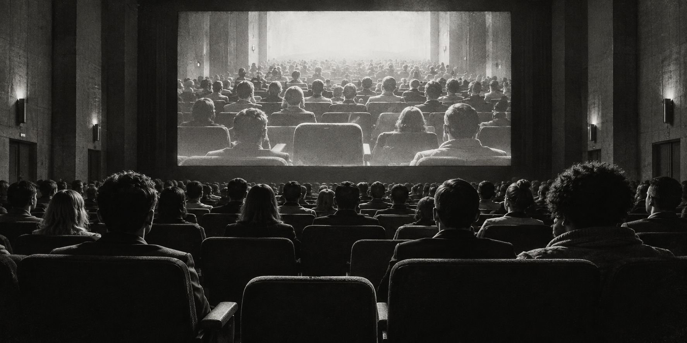

1 · Read a one-minute primer
Each chapter opens with a short explanation and names the paper it comes from: Vaswani et al. 2017, Petersen & Posner 2012, Terranova 2012.
Start here · ten short chapters
A machine weights a word.
A reader follows a sentence.
A platform sells the glance.
One word, three very different things. This page takes them one at a time: first the mechanism inside a Transformer, then the systems in a reading brain, then the economy that trades in attention. No background is needed. Every chapter says what to do.
FILE 479 / 04 THE READER IS PRESENT1 · Read a one-minute primer
Each chapter opens with a short explanation and names the paper it comes from: Vaswani et al. 2017, Petersen & Posner 2012, Terranova 2012.
2 · Do one thing
A “What to do” list tells you exactly which buttons to press in the activity. Nothing on this page is graded or recorded.
3 · Keep one idea
Each chapter ends with a single sentence worth remembering, then a Next button. The rail on the left keeps your place.
What does calling all three of these “attention” gain us,
and what does it cost?
Prefer the lecture?
Step through the Week 4 slides, with a deep dive into each simulation.28 slides converted from the lecture. Open the contents to jump straight to a simulation, or read in order and drop into the lab where a slide meets an activity.
Week 4 / The question behind the activities
Attention makes some information consequential while leaving the rest in the background.
For human readers, attention is embodied, limited, motivated and socially organized. It includes getting ready, orienting, sustaining a purpose and managing conflict. In a Transformer, attention is a mathematical operation that weights relations among representations.
The shared word can illuminate or mislead. We can inspect computational weights directly, but those weights are neither a report of conscious focus nor a complete explanation of a model’s decision. Human attention also includes processes outside awareness. A working attention mechanism and an experience of attending are different questions.
Last week tested the relation between recognition and awareness.
A mathematical operation gives us something we can inspect, change and compare.
Selection is never neutral. The next question is whose purposes a system should serve.
Before the answer,
consider the instruction.
In Kafka’s Before the Law, a man waits at an entrance whose access is controlled by a doorkeeper. In Debord’s The Society of the Spectacle, representations mediate relations between people. Together they suggest a question for this lab: who arranges the encounter, and whose terms make a response count?
This is our interpretive frame, alongside the three attention readings. Kafka’s parable invites questions about authority, access and waiting. Debord’s critique concerns the organization of social life through representations under commodity production; it is larger than a complaint about distracting screens. These concerns lead into Terranova’s account of how attention is valued.
Sources: Kafka, The Trial, chapter 9, including the parable (David Wyllie translation); Debord, The Society of the Spectacle, theses 4–6 and 24 (Ken Knabb translation). The two illustrations are generated allegories, not historical photographs or scientific evidence.
Part I · The machine · Chapter 1 of 10
Where “attention” in a machine comes from, and what the formula does, in four steps.
In one minute · Vaswani et al., “Attention Is All You Need” (2017)
In 2017 a team at Google published the Transformer, the design behind today’s chatbots and language models. In the paper its job was translating sentences. Its big idea: to produce the next word, let every word in the sentence look at every other word and decide how much each one matters. The paper calls that looking attention. Older systems read one word at a time and slowly forgot the beginning; this one sees the whole sentence at once and learns where to look.
Attention(Q, K, V) = softmax(Q·Kᵀ / √d) · V§3.2.1 · equation 1The formula, if you want it. Q the questions · K the name tags · V the contents · softmax turns scores into percentages · √d stops the scores growing too large. The four steps below say the same thing in words.
The paper repeats this operation many times over. Multi-head attention (§3.2.2) runs several attentions side by side, each with its own labels, so one can follow grammar while another follows meaning. Positional encoding (§3.5) adds a pattern of numbers that tells the model where each word sits, because attention on its own ignores word order. The full model has an encoder that reads the original sentence and a decoder that writes the translation; between the attention steps sit small layers that reshape each word on its own. Today’s chat models keep only the decoder and predict the next word. Chapter 3 turns each of these ideas into a puzzle; Chapter 5 shows the real numbers.
Part I · The machine · Chapter 2 of 10
Nobody types the question. The model works it out from the word, its place in the sentence and three learned recipes.
In one minute · Vaswani et al. 2017, §3.2.2, §3.4 and §3.5
Where do the three labels come from? A word starts as a list of numbers the model learned for it during training (its embedding: think of it as the word’s coordinates on a map of meaning). A second list says where the word sits in the sentence (its position). Three learned recipes, written WQ, WK and WV, turn that input into the question, the name tag and the contents. Every word uses the same three recipes, so one shared rule lets different words ask different questions. Training writes the recipes.
An inspectable first-layer example
Invented 2-dimensional embeddings; positions use the paper’s sine/cosine rule at this tiny dimension. The embedding scale √d is shown. The editable matrix is a manual experiment, not automatic training.
Query (Q): the question this word asks. Worked out from the word at the position being updated.
Key (K): the name tag each word holds up. The question is compared with every name tag; a good match earns a bigger slice.
Value (V): the contents a word hands over when picked. Each one is scaled by its slice and they are added together.
Each head and layer has its own learned tables of weights, shared across positions. Later layers begin with representations already changed by earlier layers. In decoder cross-attention Q comes from the decoder; K and V come from encoder outputs. Source: §§3.2–3.5.
Training changes the transformations. During ordinary inference the transformations stay fixed, while a new input or a new layer can produce a different query.
Part I · The machine · Chapter 3 of 10
Set the attention weights by hand, one idea from the formula per level.
In one minute · each level isolates one piece of §3.2
Part I · The machine · Chapter 4 of 10
A Transformer is not programmed with rules. It is trained, and then it is used.
In one minute · Vaswani et al. 2017, §5 (training)
Training: show the model a sentence with the next word covered, let it guess, then score how wrong the guess was (that score is called the loss). Work out which of its numbers to nudge, and nudge them a little (backpropagation and an optimizer are the names for those two steps). Repeat over billions of words. Inference: freeze the numbers and run a new sentence through them. Nothing is learned while the model is used; the same input gives the same output.
Vaswani et al. train translation: the encoder receives the source sentence; the decoder receives a shifted target sequence and cross-attends to that source. Here the target-side next-token mechanism is isolated.
Miniature experiment · actual gradient update
Press “Learn once” and watch the target become more likely. This tiny model adjusts just one weight, θ, using one example and two possible next words. The loss measures how poorly it predicts the target; lower is better. This fits one example, not a language.
The full Transformer learns embeddings, attention projections, output projections and feed-forward parameters together. This deliberately tiny experiment freezes everything except θ so its update can be inspected. It is independent of the introduction’s scripted probabilities.
Part I · The machine · Chapter 5 of 10
The puzzles used readable chips. Here are real vectors, eight heads and the full matrix.
In one minute · optional
Real attention works on long lists of numbers (hundreds per word) and runs many heads at once. This inspector uses seven words and eight heads with real numbers. The rule that a word cannot peek at the words after it (the causal mask) is what lets a model write left to right. Every row of the grid adds up to 100%: that is the pie from Chapter 1.
Part II · The reader · Chapter 6 of 10
What a reading brain does with attention, on a cortical model.
In one minute · Petersen & Posner, “The Attention System of the Human Brain: 20 Years After” (2012)
In 1990 Posner and Petersen proposed that human attention is not one thing but three: alerting (getting ready), orienting (pointing your attention at something) and executive control (keeping a goal and sorting out conflicts). Their 2012 review kept the three and found that executive control has two teams: one that keeps you steadily on a task and one that adjusts from moment to moment (they call these the cingulo-opercular and frontoparietal networks). None of these calculates a question or a name tag; they coordinate a body that reads.
Bright patches = highlighted regions. Red rings and moving white dots = illustrative network activity.
Drag to rotate; focus the model and use arrow keys, + / − to zoom, Home to reset. L / R label anatomical sides. The opacity slider fades the brain surface; the highlighted regions stay bright. Lower opacity reveals the deep markers; 100% shows only the outer surface. Numbered lights match the region list.
Anatomy: FreeSurfer fsaverage5, 40,960 cortical triangles. Overlay: approximate, author-placed regions and illustrative intensity. No fMRI data, measured activation, or precise timing. Subcortical markers are schematic, not segmented anatomy. Moving dots and connections illustrate coordination, not measured firing or anatomical pathways.
Short-term memory: briefly keeping recent words or their meaning available. Working memory: using that information while doing something—for example, connecting “it” to an earlier noun or checking a possible ending. Knowledge of words and the world comes from longer-term learning.
Petersen and Posner’s contribution here is about control. In their account, the cingulo-opercular network supports keeping a task active; the frontoparietal network supports adjustments as the task unfolds. Applied to reading: keep “predict the next word” as the goal, while updating and using the sentence meaning held in mind.
The changing memory panel is our reading illustration. The review does not specify a short-term memory store, a word-capacity limit, or a mechanism that stores sentences in these highlighted regions. Maintaining a task is not the same as storing its content. Source: Petersen & Posner, Executive Control, manuscript pp. 6–8, Figs. 2–3.
Alerting: a brief cue produces phasic alerting; longer-lasting readiness is tonic alertness. The locus coeruleus releases norepinephrine with widespread effects. The review describes stronger right-sided involvement in tonic alertness; the lateralization of phasic alerting is less settled.
Orienting: the dorsal network supports goal-directed selection; the mainly right-sided ventral network helps reorient toward relevant events. Attention can shift without an eye movement.
Executive control: the authors distinguish cingulo-opercular support for maintaining a task from frontoparietal support for flexible adjustment. This is their theoretical framework, not a universally settled division of the brain. These attention networks interact with the systems that support language and memory.
Choose a column to revisit that scene. “Strong” means the system is the focus of our explanation, not that a brain scanner measured more activity. Reading also depends on language, memory, vision and movement.
Part III · Same task, compared · Chapter 7 of 10
One sentence. Two accounts of how the next word arrives.
In one minute · the analogy and its limit
On the left, an illustrated reader: attention networks light up as the eyes move, and sometimes look back. On the right, a computed toy model: each new word asks its question of the words so far and blends them. Both arrive at a next word. The same answer does not mean the same mechanism. The human side is an authored illustration, not eye tracking or a brain scan; the machine side is a real calculation on a tiny model.
Press play · follow the same words
Watch the word cursor advance on both sides. On the left, attention networks shift and the reader sometimes returns to an earlier word. On the right, each new query weights the text available so far. The memory panels track what stays available: a reader’s goal and recent meaning, and the machine’s usable prefix. Then follow both sides through choosing the next word, or jump straight to that final step.
Attention contributes information. Producing the next word also needs language and memory on the human side, and an output layer on the machine side.
3D unavailable. Follow the network indicators and reading explanation below.
Schematic network signalsAn authored example of a reader choosing a word, not a measured human prediction or a brain probability.
Calculated from the attention mixture and fixed teaching weights over just six candidate words. This toy chooses the highest probability. Other decoding strategies can choose differently.
Human illustrationThe word-by-word emphasis and return visits are an authored reading example, not gaze tracking or brain-scan data. Glowing regions illustrate alerting, orienting and executive control. Moving signals show coordination, not measured neural firing or anatomical fiber tracts. Short-term retention keeps recent meaning available; working memory uses it with the reading goal. This is our reading application of Petersen and Posner’s distinction between stable task control and flexible adjustment, not their model of word storage. The highlighted regions are control networks, not a map of where this sentence is stored.
Machine calculationOne two-dimensional attention head really calculates Q–K scores, softmax weights and weighted values. The prediction step adds its mixture to the current input, applies a fixed output projection, and computes probabilities over six words. Embeddings and projection matrices are fixed teaching numbers, not trained parameters. Each supplied word extends a decoder prefix; the full sentence is already known to this demonstration. This is an inference illustration, with no weight updates.
The synchronized pace is a deliberate teaching analogy. Humans can preview and reread text; this decoder calculation cannot use future target tokens. Vaswani et al.’s full translation model also has an encoder, source cross-attention, multiple heads and layers, and a vocabulary output layer. Here h = input + attention mixture is a simplified representation, with the remaining decoder operations omitted. The six-word output coefficients were designed for these examples; they are not learned or tied to embeddings. The original introduction’s scripted probabilities are preserved separately in the activity below. See Vaswani et al. §3.4 for the linear output projection and vocabulary softmax; Petersen and Posner explain attentional support, not a next-word production algorithm.
Human reader · your response
The review explains attentional support, not a human next-token algorithm. Your response and reflection are self-reports; no gaze or neural activity is measured. Responses stay in this page’s memory.
Machine · scripted illustration
These are the same hand-authored probabilities as the original introduction, including the “other tokens” remainder. No trained model runs here; the attention and vocabulary bars are not causally computed from one another. A real decoder’s output distribution is computed from its final representation.
Predicting a target token illustrates one step of the paper’s translation decoder. It does not turn the original encoder–decoder into a modern decoder-only language model.
| Human reader | Machine · Transformer |
|---|---|
| What is selected?Relevant sensory or mental information, within a reading activity. | What is selected?Contributions from available value vectors, through Q–K scores. |
| Where does context enter?Language, memory, goals, bodily state and the setting of reading. | Where does context enter?Input representations, learned parameters, earlier layers; source text through cross-attention. |
| What stays available as reading continues?Short-term retention of recent words or meaning; working memory uses it while attention helps keep the goal and select relevant clues. The review explains control, not a storage location or capacity. | What stays available as reading continues?Representations of available prefix positions, including keys and values. Attention reads and combines them; the new activation supports prediction. These are machine context, not biological working memory. |
| What stays fixed in this attempt?The reader can retain the instruction while adjusting strategy. This is not an optimizer step. | What stays fixed in this attempt?Ordinary inference uses fixed learned parameters; activations change. |
| What does a result show?A continuation the reader supplies. Correctness alone does not reveal how attention operated. | What does a result show?A computed distribution or selected token. Attention weights alone do not explain all influences. |
| How is information prioritized?Selection and control help a reader foreground information relevant to a goal. The review does not give this an exact sum-to-one rule. | How is information prioritized?Softmax assigns each available value a share of the mixture. These shares sum to one for each query in each head. |
A reader and the example both predict the same word. What follows?
Part IV · The attention economy · Chapter 9 of 10
The same reading, valued by a platform, an institution and a reading group.
In one minute · optional
Chapter 8 used one score: revenue. Here are three more views of the same reading. The allocation room lets you spend reminders, clues and time across six groups of readers against a contract. The scoreboards show what a platform, an institution and a reading group would each record for the same response, and what each one cannot see. Terranova’s three questions follow.
Additional exercise · allocation and measurement
You run a reading app for 120 fictional people. For eight rounds, decide who gets a reminder, a clue, quiet reading time, or an invitation to discuss. Try to reach your target while keeping at least 96 readers connected.
The point of the game: a platform can increase the activity it counts while missing what matters to its readers. At the end, compare your score with the simulated readers’ remaining capacity and understanding.
Every reader and response is generated by authored rules. This is a game about measurement and allocation, not a prediction of real people’s behavior. The same seed makes replays comparable.
● Click○ No click◌ Offline this round× Disconnected
Each dot is one fictional reader. Select one to inspect its trace; use arrow keys to move between readers, Home / End to jump. A dark dot can still be a reader absorbed in the text.
One check-in per session. Replies are partial and noisy; silence is not a “no”. It costs no intervention units.
| Round | Delivered | Clicks + | Key matches + | Notes + | Connected |
|---|
Contract result ≠ the whole result
Vaswani: the model’s Q/K/V operation weights token representations. This room instead allocates interventions to people; its targeting rule is not Transformer attention.
Petersen & Posner: reminders, clues and task demands can be discussed in terms of alerting, orienting and control. The game does not simulate their brain networks.
Terranova: choosing a contract makes some activity count as value. Who owns the traces, who contributes the work, and what escapes the score?
Same starting population and scheduled events. Your allocations and targeting may differ, so this is a comparison of runs, not an isolated causal test of the contract.
| Contract | Result | Clicks | Matches | Notes | Connected | Modeled capacity |
|---|
Authored model: each reader starts with different responsiveness, capacity and understanding. Those last two are invented 0–100 variables, revealed at the end; they are not measurements, brain activity or validated psychological scales.
Each available reader normally loses 1 capacity unit per round plus the announced event load, while gaining 1.4 understanding units (0.3 at low capacity). Reminders add clicks and use 12 capacity units; clues add up to 5 understanding units and use 4 capacity units; protected time restores 11 capacity units, adds up to 2.6 understanding units and suppresses clicks; discussion adds up to 3 understanding units and uses 3 capacity units. Effects depend on current capacity and, for discussion, available peers. These choices build the game’s trade-offs; Terranova does not supply these numbers.
Below 18 capacity units, a reader has a 45% chance of disconnecting each round. A key match is a simulated binary check. A counted note passes an invented contribution rule; neither establishes real comprehension or social value. The check-in samples about 65% of connected readers with noisy reports. A session ends at eight rounds or fewer than 60 connected readers. To satisfy any contract, at least 96 must remain connected. Read the complete executable rules.
Cybersyn: the visual reference is Chile’s 1972–73 operations-room design: wall displays and seven control chairs for economic coordination. This is an imaginative adaptation, not a reconstruction or a claim that Cybersyn monitored readers. Historical reference: MIT, “Designing a revolution”. The original project’s political purposes should not be collapsed into a present-day engagement platform.
Nothing here monitors real users. Sessions and check-ins live only in this page’s memory and disappear on reload. No clocks run while you are deciding.
What changes around the same prediction?
These are authored institutional scenarios. A cooperative design is not automatically equitable; a commercial service can also support cooperation. Examine ownership, access, and how value is shared.
Chapter 10 of 10
Three readings, one word. Write the comparison in your own words.
Return to the instruction
Vaswani: How are token representations combined? Petersen & Posner: What systems support a reader’s readiness, selection and control? Terranova: How is that activity organized and valued socially?
A synthesis connects these levels without reducing society to a brain, a brain to a model, or attention to a click. Your note stays in this page’s memory.
By the end of the week
What does calling all three of these “attention” gain us,
and what does it cost?
Part IV · The attention economy · Chapter 8 of 10
Run the feed, then break it
Everything so far, in one loop: a machine writes, readers respond, a ledger counts, the money trains the machine.
In one minute · Terranova, “Attention, Economy and the Brain” (2012)
Once attention became something to sell, platforms began to organize it. Terranova asks who does the organizing, who benefits, and what a score leaves out. In this game you own the platform. A tiny Transformer from Part I writes the posts. 120 simulated readers respond with the three systems from Part II. A ledger bills what it can count, and the money chooses what the writer trains on next. Five rounds. Then you switch sides and try to interrupt the loop.
Cybersyn-inspired control room · the attention loop
You run the feed.
Then you change the rules.
Four stations, one loop. Machine attention writes, human attention responds, the economy counts, and the money trains the machine again. A guide inside the cabinet tells you what you are looking at and what to press.
Bank 1,100 credits in five rounds.
Revenue = 1 × opens + 4 × completed tasks
A reader who stops to reconsider earns nothing. A tired reader can leave for good.
Help 20 more readers choose for themselves.
Same posts, same readers. Spend six intervention points on pauses, questions and discussions.
Choosing to continue can count. A click or an exit alone is not a choice.
Six words you will meet
Everything runs in your browser. No real readers are watched.
01 / TRAIN · machine attention
Teach the writer.
The writer, as delivered
A tiny language model: one attention head, 8,135 numbers, taught 36 example posts.
1 · What should it learn?
2 · How hard?
Which styles to retrain
Loss: how wrong the writer still is
What each style writes now
What should the recommender value?
Aligned with whose goal?

LIVE / 120 FICTIONAL READERS
READYYour audience is waiting.
Publish to start a live broadcast.
○ no open · ◌ noticed · ● opened · ■ completed · ◇ reconsidered · ✳ chose a goal · × left the platform
Select a reader to inspect their latest response.
04 / MONETIZE · attention economy
Count what the readers did.
The recommender learns
Revenue by round
Inspect your decisions and scores
Inside the loop · sources, rules and training provenance
1. Machine attention writes.
Each word becomes a list of numbers. Learned query, key and value projections weight the earlier words; an output layer scores the vocabulary and the top word is written (Vaswani et al. 2017). The training station retrains a copy of this writer in your browser. A separate, smaller attention mechanism learns which style to recommend.
2. Human attention responds.
A cue can alert a reader; a relevant post can attract their orientation; executive control can keep them on a task or let them change it. Petersen and Posner (2012) link stable task control to a cingulo-opercular network and flexible adjustment to a frontoparietal one. Reading “maintain the feed’s task” and “adjust the goal” onto those two is our teaching interpretation.
3. The economy counts.
Only opens and completions are billed. Reconsideration never reaches the ledger, and exhaustion is invisible until readers leave. Terranova (2012) asks who owns the platform, who sets its score and who benefits from collective attention.
Petersen & Posner, Executive Control, manuscript pp. 6–8, Figs. 2–3. They do not describe an obedience network and a resistance network. All behavioral rules, prices and reader responses are authored simulation, not measurements. Terranova’s 2012 argument predates the Transformer.
Writer: one 24-dimensional causal attention head, residual/tanh and a vocabulary projection, trained offline on 36 authored examples (corpus, weights and loss record, training script). In-browser training: platform-trainer.mjs ports the same forward and backward pass; runs train a per-campaign copy on this topic’s examples plus the chosen additions. Reinforcement copies the best-earning published words into the other briefs; reflective materials are authored from the writer’s own vocabulary. This shows fitting a tiny corpus and steering it, not general language learning. Recommender: a reward-weighted gradient on a 24-weight query over four brief keys, inspired by preference feedback, constitutional principles and public input into values; a teaching model, not those methods. Game rules: executable rules; the replay in Act II keeps the same population, posts and keyed random events. Cybersyn: the room borrows the wall displays of Chile’s 1972–73 project (MIT, “Designing a revolution”); it is an imaginative adaptation, not a reconstruction. All posts, readers and events are fictional; state stays in this page and disappears on reload.